You're Welcome to
Church of Christ
No 4B Onuato Street, Ogui Nike, Off Presidential Road, Enugu, Enugu State, Nigeria!
About Us
Brief History
The Church of Christ, No 4B Onuato Street, Enugu, Enugu State has a rich and inspiring heritage that traces its beginnings to the period before the Nigeria–Biafra civil war. Through the faithful labor and missionary outreach of brethren from the United States, the church was planted and began its early meetings at Leo Cinema, located adjacent the present-day MTN office along Ziks Avenue, Enugu.
Post-War Reorganization (1970)
At the end of the civil war in 1970, the brethren regathered and relocated to Uwani Secondary School, at Robinson Street, Uwani, Enugu, where worship and fellowship continued faithfully.
A Time of Movement and Growth (1978)
In 1978, as the congregation grew and sought a more suitable meeting place, the church moved to Owerri Hall, Asata, Enugu. This marked a significant period of spiritual progress and stability.
Final Relocation to Onuato (1982)
By the grace and providence of God, in 1982, the church made its final and permanent relocation to: No. 4B Onuato Street, Off Presidential Road, Enugu, Enugu State. To this day, the saints of God continue to gather here to worship, grow, and serve the Lord faithfully.
Ministers Who Served Faithfully
The congregation has been blessed with dedicated ministers who labored in teaching, evangelism, and strengthening the church. They include:
- Evang. Rufus Akataobi (Late) (Started his ministration immediately after the Service of the US missionaries)
- Evang. Josiah Nwamuo (Late)
- Evang. Benjamin Chimeziri (Late)
- Evang. Ezekiel Akeyemi(Late) (A visiting Evangelist who worked with Evang. Chimeziri)
- Evang. Samuel Ikpeama (Late)
- Evang. Ike Amanari
- Evang. Johnson Okpara (Late)
- Evang. E.J. Essien (Late)
- Evang. Donatus Azu
- Evang. Anthony C. Ogbu
- Evang. G.C. Enyinnaya (Current Minister)
Ordained Church Leadership (1999)
In 1999, under the ministration of Bro.E.J. Essien, elders and deacons were ordained to support and oversee the work of the church.
Elders
- Bro. Tony Ike (Late)
- Bro. Josiah Ezuruike (Late)
- Bro. G.C. Ezinwa
Deacons
- Bro. Silas Ugwuanyi(Late)
- Bro. Godwin Ogbonna (Late)
Though this leadership structure no longer exists today, their labor and service remain honored and remembered.
A Warm Invitation
The Church of Christ, No. 4B Onuato Street, Enugu, Enugu State, warmly welcomes you! We remain committed to worshipping God in spirit and in truth, spreading the gospel, and standing firm on the teachings of Christ and His apostles.


Days of Activities

Youth Bible Studies
The youth Bible studies holds every Monday by 5PM.
General Bible Studies
The general Bible studies holds every Wednesday by 5PM.

Sisters' Bible Studies
The Sisters' Bible studies holds every Second Saturday of the month by 9AM.
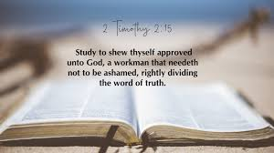
Sunday Worship
The Church gathers to worship God every Lord's Day by 9AM.
Evangelism
The Church goes out to preach the Gospel of our Lord Jesus Christ every Third Sunday of the month by 4PM.

Prayer Meeting
The Church gathers to fast and pray every first Saturday of the month by 7AM.
Works of the Church
Evangelism
The church is commanded to preach the gospel to the whole world. Evangelism is the act of teaching, sharing, and proclaiming the gospel of Jesus Christ to save the lost and bring them to the knowledge of the truth.
Matthew 28:19–20 (KJV):
“Go ye therefore, and teach all nations, baptizing them in the name of the Father,
and of the Son, and of the Holy Ghost: Teaching them to observe all things whatsoever
I have commanded you: and, lo, I am with you alway, even unto the end of the world. Amen.”
Edification
Edification is the spiritual growth, strengthening, and building up of the church members. It includes teaching, correction, comfort, worship, fellowship, and encouraging one another in righteousness.
Ephesians 4:12 (KJV):
“For the perfecting of the saints, for the work of the ministry,
for the edifying of the body of Christ.”
Benevolence
Benevolence involves showing love, compassion, and care to those in need—especially the poor, widows, orphans, and brethren facing hardship. The church follows the example of Christ in helping others.
James 1:27 (KJV):
“Pure religion and undefiled before God and the Father is this,
To visit the fatherless and widows in their affliction,
and to keep himself unspotted from the world.”
Items of Worship
Praying
Prayers offered to God, led by faithful men, are a vital part of Christian worship. Through prayer, the church speaks to God, gives thanks, offers praise, seeks forgiveness, and makes requests according to God’s will, while expressing faith, humility, and acknowledging total dependence on Him.
Acts 12:5 (NKJV):
“Peter was therefore kept in prison, but constant prayer was offered to God for him by the church.”
Acts 2:42 (KJV):
“And they continued stedfastly in the apostles' doctrine and fellowship, and in breaking of bread, and in prayers.”
Preaching/Teaching
A sermon or Bible lesson is delivered by a minister, evangelist, or brother, focusing on the teaching and explanation of God’s Word. Through it, the church is instructed, encouraged, corrected, and strengthened in faith and obedience to the Scriptures.
1 Corinthians 4:17 (NKJV):
“For this reason I have sent Timothy to you, who is my beloved and faithful son in the Lord, who will remind you of my ways in Christ, as I teach everywhere in every church.”
2 Timothy 2:2 (NKJV):
“And the things that you have heard from me among many witnesses, commit these to faithful men who will be able to teach others also.”
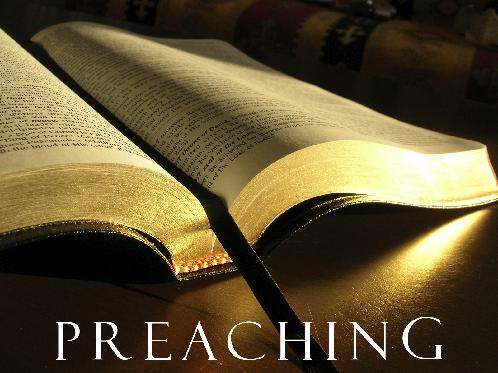
Giving
A voluntary contribution or collection made by members of the Church according to how they have prospered, following New Testament instructions.
1 Corinthians 16:1-2 (NKJV):
“Now concerning the collection for the saints, as I have given orders to the churches of Galatia, so you must do also.On the first day of the week let each one of you lay something aside, storing up as he may prosper, that there be no collections when I come.”
2 Corinthians 9:6-7 (NKJV):
“But this I say: He who sows sparingly will also reap sparingly, and he who sows bountifully will also reap bountifully. So let each one give as he purposes in his heart, not grudgingly or of necessity; for God loves a cheerful giver.”
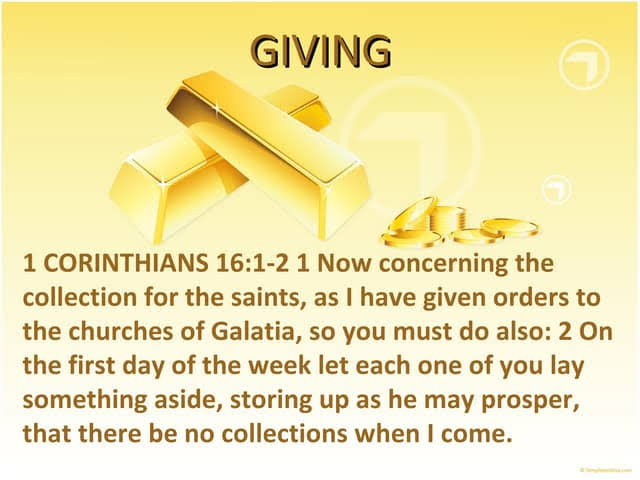
Lord's Supper / Communion
Observed weekly, usually on the first day of the week, The Church partake of unleavened bread and the fruit of the vine to remember and proclaim the death of Christ. It is a solemn act of worship, reflection, and fellowship with the Lord.
1 Corinthians 11:23-25 (NKJV):
“For I received from the Lord that which I also delivered to you: that the Lord Jesus on the same night in which He was betrayed took bread; and when He had given thanks, He broke it and said, “Take, eat; this is My body which is broken for you; do this in remembrance of Me.”
In the same manner He also took the cup after supper, saying, “This cup is the new covenant in My blood. This do, as often as you drink it, in remembrance of Me.”
Acts 20:7 (NKJV):
“And upon the first day of the week, when the disciples came together to break bread, Paul preached unto them, ready to depart on the morrow; and continued his speech until midnight.”
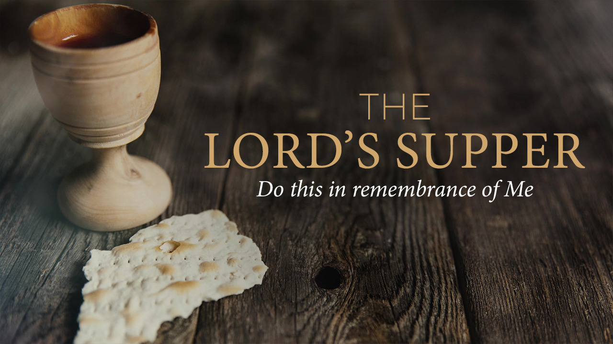
Singing
Singing is a vital item of worship, expressing praise, thanksgiving, and adoration to God. It unites the congregation in spirit and truth, uplifting hearts and minds towards the divine. Congregational singing of hymns, psalms, and spiritual songs, led by the congregation's voices without instrumental accompaniment, is commanded.
Ephesians 5:19-20 (KJV):
"Speaking to yourselves in psalms and hymns and spiritual songs, singing and making melody in your heart to the Lord;
Giving thanks always for all things unto God and the Father in the name of our Lord Jesus Christ."
Hebrews 13:15 (NKJV):
"Therefore by Him let us continually offer the sacrifice of praise to God, that is, the fruit of our lips, giving thanks to His name."
Listen to Melodious Spiritual Songs
Thank You Lord
Hide Me Rock Of Ages
I Love My Saviour Too
Our God, He Is Alive
Steps of Salvation
Hear the Gospel
Romans 10:17 (KJV): “So then faith cometh by hearing, and hearing by the word of God.”
Believe the Gospel
Mark 16:16 (KJV): “ He that believeth and is baptized shall be saved; but he that believeth not shall be damned.”
Repent of your sins
Acts 17:30 (NKJV): “Truly, these times of ignorance God overlooked, but now commands all men everywhere to repent”
Confess your faith in Christ
Romans 10:10 (KJV): “For with the heart man believeth unto righteousness; and with the mouth confession is made unto salvation.”
Be Baptized for The remission of sins
Acts 2:38 (KJV): “Then Peter said unto them, Repent, and be baptized every one of you in the name of Jesus Christ for the remission of sins, and ye shall receive the gift of the Holy Ghost.”
Remain faithful till the end
Revelation 2:10 (KJV): “Fear none of those things which thou shalt suffer: behold, the devil shall cast some of you into prison, that ye may be tried; and ye shall have tribulation ten days: be thou faithful unto death, and I will give thee a crown of life.”
Contact
Visit Us
No. 4B Onuato Street, off Presidential Road, Enugu State.
We love visitors, and we deeply appreciate your presence with us. May God bless you abundantly, Amen!
Call
+234 703 034 5670 (Ass. Secretary)
+234 813 664 0707 (Secretary)
+234 806 858 2779 (Minister)
Feel free to contact us at any time—your message matters, and you can be sure of a warm, kind and timely response.
churchofchristonuato@gmail.com
coconuato@gmail.com
We welcome your emails and inquiries. Please don't hesitate to reach out to us via email for any inquiry, questions or information you may need.
Bro. Chimaroke E. Ezurike
Assistant Secretary
Bro. Ernest N. Okafor
Secretary
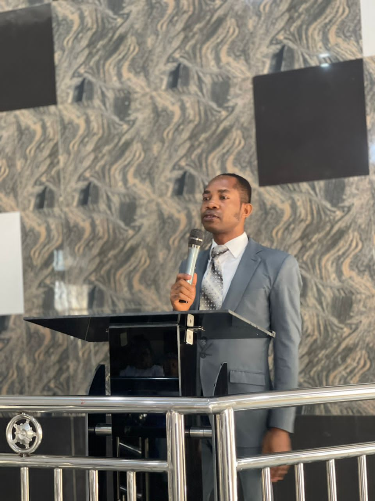
Evang. Goddey C. Enyinnaya
Minister
Gallery
Moments of worship, fellowship, and service — captured in simple joy and devotion.
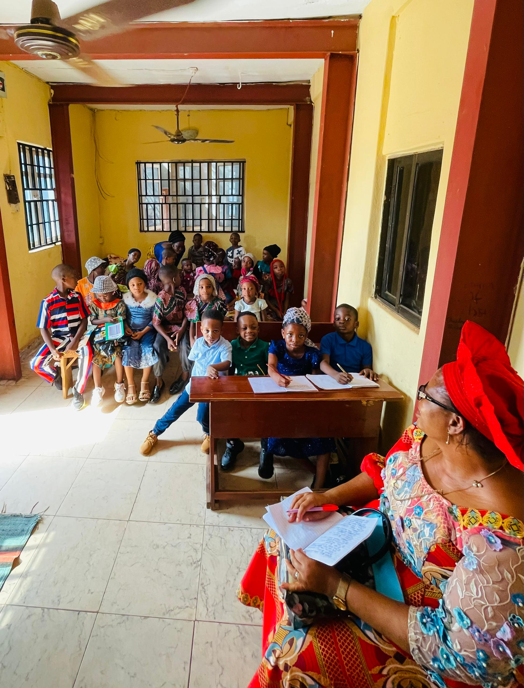


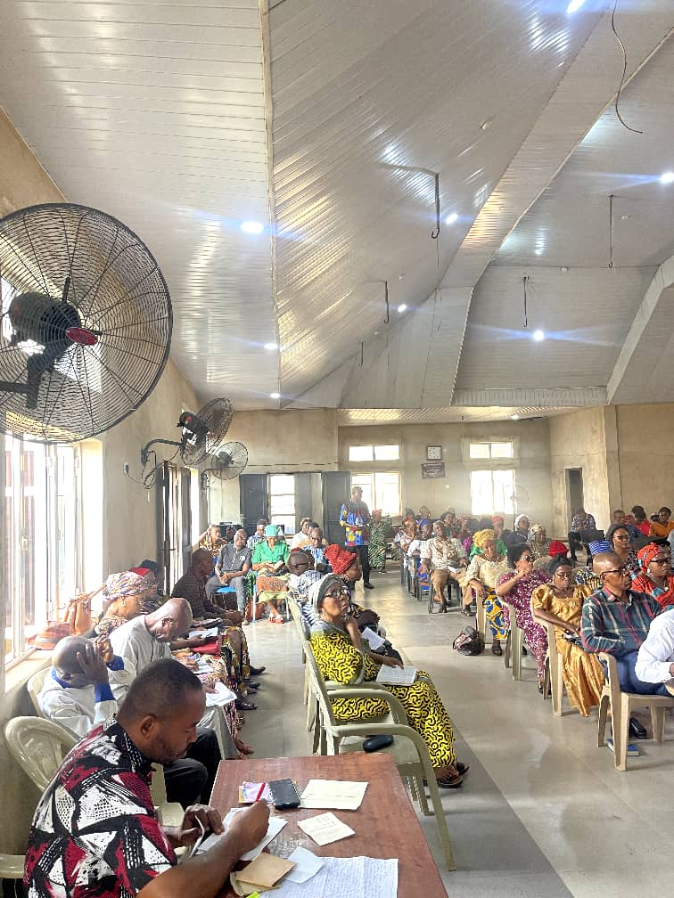

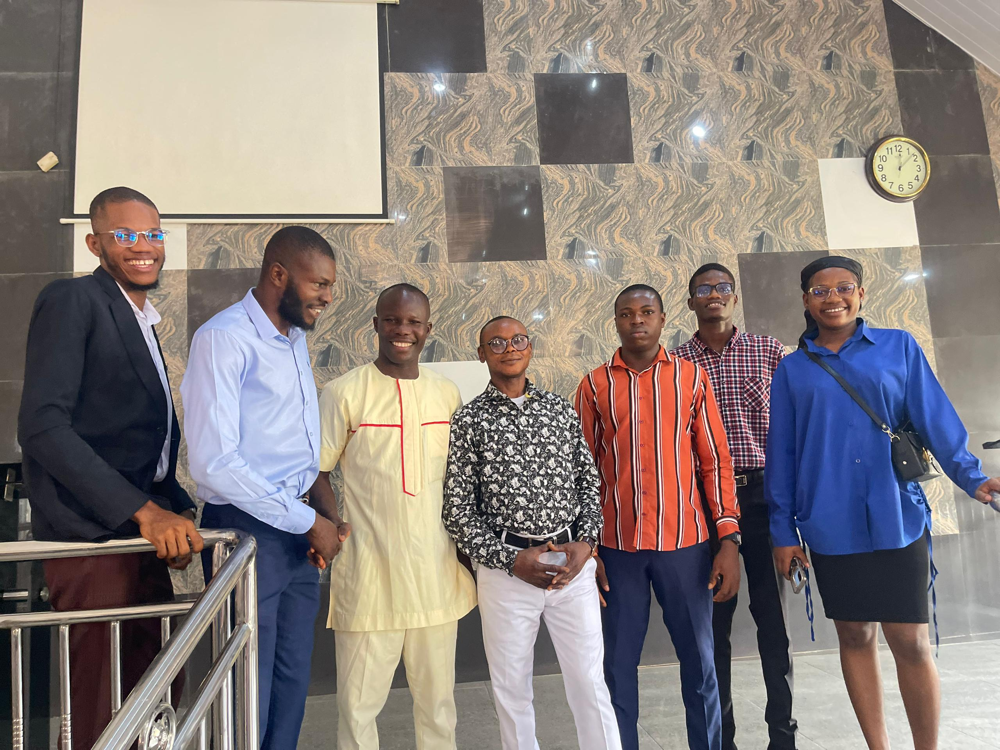
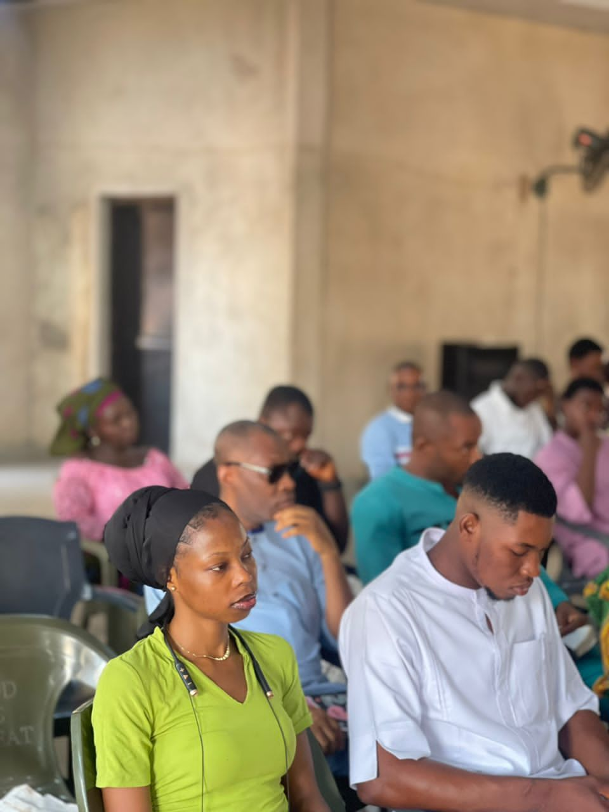
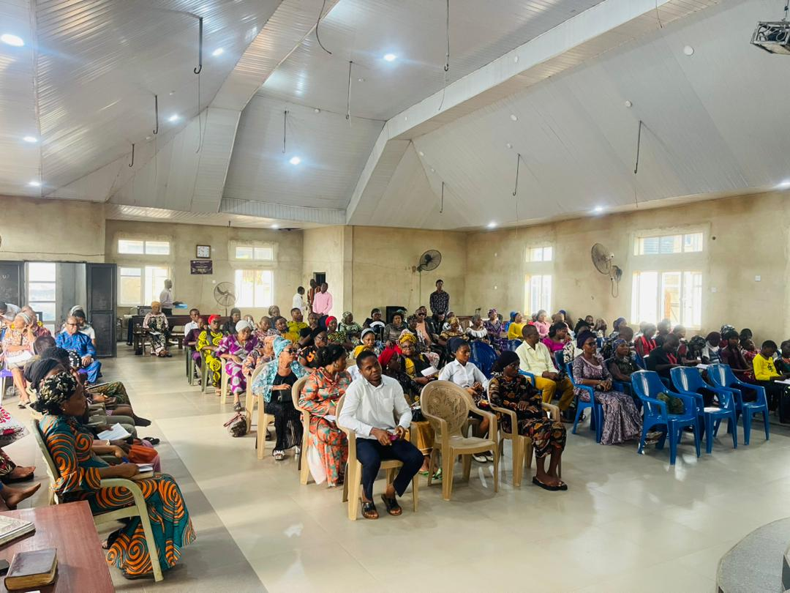
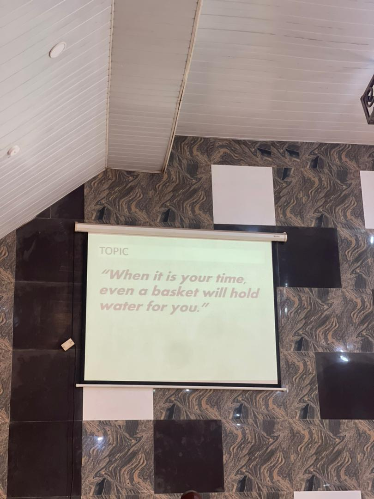

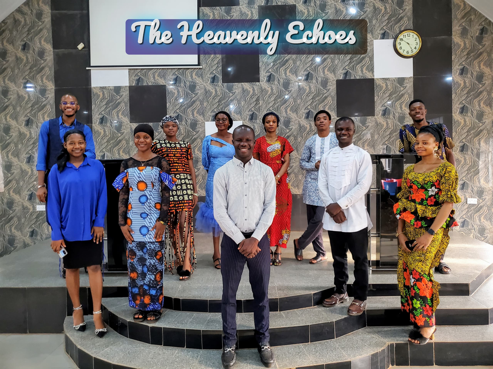